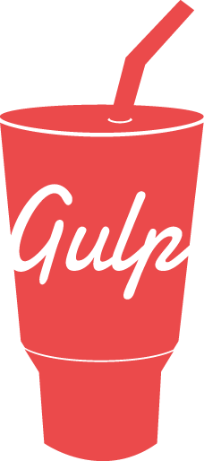

Getting Started with GulpJS
Like many others, I incorporated a task runner (namely GruntJS) into my workflow some time ago. If you tend to use "preprocessed languages" like CoffeeSript, LESS or Sass it's virtually a requirement in maintaining your sanity. Although I prefer sticking to vanilla JavaScript and CSS, introducing this step into my development cycle has certainly paid off in man-hours saved alone. Tasks such as linting or minification during the build process, previously requiring text editor plugins or an array of terminal commands to remember, are now diminished to mere after-thoughts. Best of all, these tasks can now be versioned within your project's repository ensuring a consistent result despite varying environments in which a task may be run.
For some time now, GruntJS has been the de-facto task runner. It's plugin respository boasts more than 2,200 available plugins, 27 of which are officially maintained by the GruntJS team and cover the most common of tasks such as running JSHint, concatenating files, compiling CoffeeScript and much more. Nevertheless, the developers at Fractal felt the need for an additional option, pairing their own unique ideas with NodeJS' Streams API.

Their efforts have resulted in Gulp, an amazingly fast task runner, and it's gained quite a following amongst developers with nearly 300 plugins of its own. Not only do Gulp tasks execute much quicker than comparative Grunt tasks, but I've found the process of actually writing tasks much simpler. I spend less time managing a project's supporting toolset, allowing me to focus on the most important goal: shipping.Unlike Grunt, in which tasks are defined via a rather verbose configuration API, in Gulp you're just writing plain ol' JavaScript - you program your tasks, rather than configure them. Consider the following gruntfile.js that runs JSHint, minifies and concatenates every JavaScript file within a directory:
module.exports = function(grunt) {
grunt.initConfig({
pkg: grunt.file.readJSON('package.json'),
jshint: {
files: ['src/js/*.js'],
options: {
jshintrc: true
}
},
concat: {
build: {
src: ['src/js/*.js'],
dest: 'build/app.js'
}
},
uglify: {
build: {
files: {
'build/app.min.js': ['<%= concat.build.dest %>']
}
}
}
});
grunt.loadNpmTasks('grunt-contrib-jshint');
grunt.loadNpmTasks('grunt-contrb-concat');
grunt.loadNpmTasks('grunt-contrib-uglify');
grunt.registerTask('default', ['jshint', 'concat', 'uglify']);
};To do the same, using Gulp:
var gulp = require('gulp'),
jshint = require('gulp-jshint'),
concat = require('gulp-concat'),
uglify = require('gulp-uglify');
gulp.task('jshint', function() {
gulp.src('src/js/*.js')
.pipe(jshint())
.pipe(jshint.reporter('default'));
});
gulp.task('build', function() {
return gulp.src('src/js/*.js')
.pipe(concat('build/app.js'))
.pipe(uglify())
.pipe(gulp.dest('build/app.min.js'));
});
gulp.task('default', function() {
gulp.run('jshint', 'build');
});I find this much easier to understand and, more importantly, modify. Rather than worry about performing a task within the strict confines of an API, which often leads to temporary directories and files as tasks become dependent upon the output of other tasks, we're just piping streams through modification functions. There's no need to distinguish between a plugin's native tasks and the project's tasks - a task is a task is a task.
If you'd like to give Gulp a spin, perhaps rewrite one of your own Gruntfiles (don't worry, the two can live side-by-side without conflict), the installation is just as simple as most other node packages.
First, install gulp globally:
npm install -g gulpThen, install gulp and gulp-util in your project's devDependenies:
npm install --save-dev gulp gulp-util